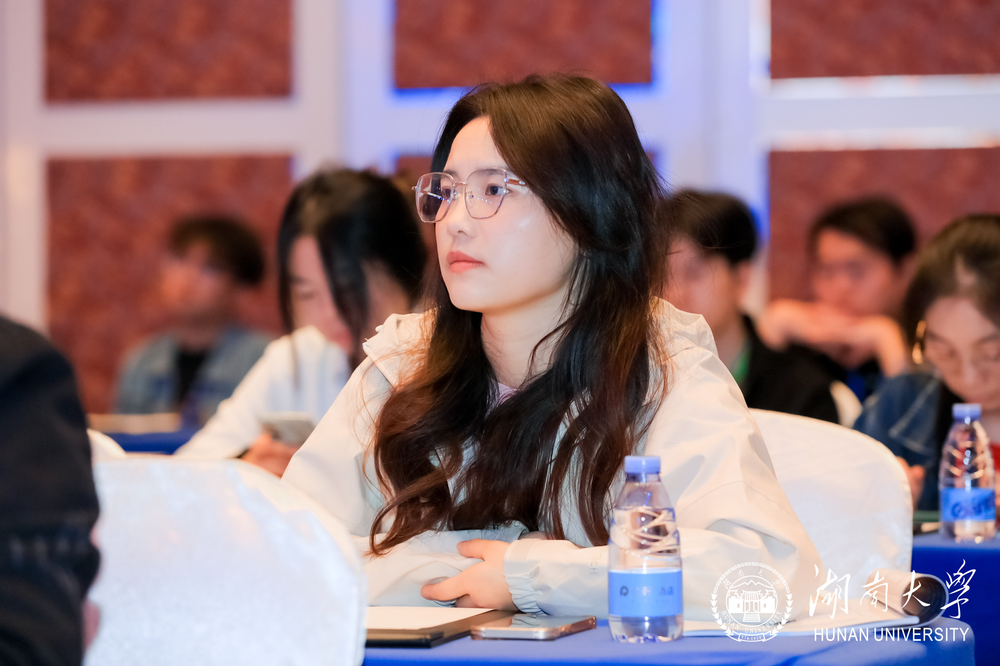

Qiong LIN (林琼)，I am currently a final-year Ph.D. Candidate in Control Sciences and Engineering at Hunan University, advised by Prof. Zhiqiang Miao and Prof. Yaonan Wang.
简要描述这项研究的内容。你可以介绍研究的目标、方法和成果。